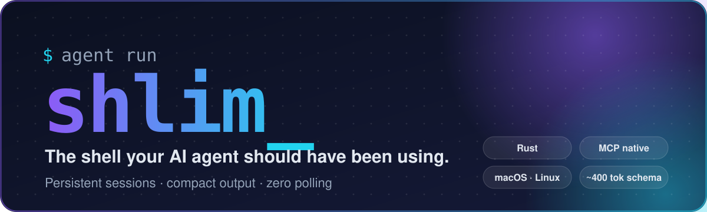
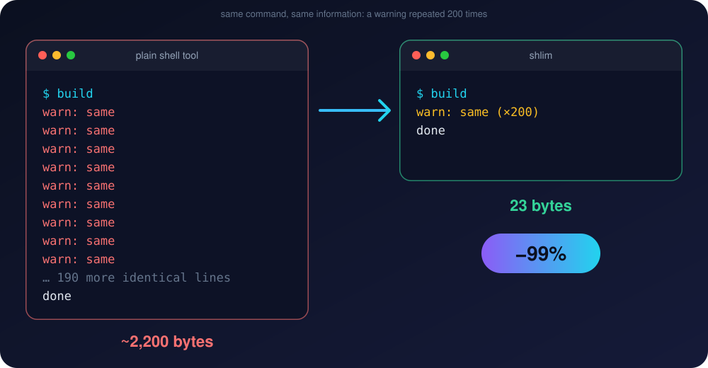
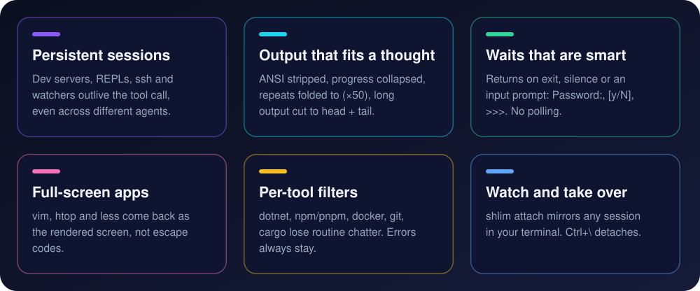
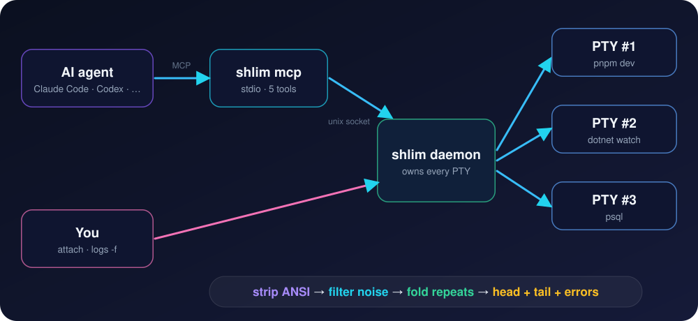

Real PTY sessions owned by a background daemon, with output trimmed to what an AI agent needs to decide its next move. One Rust binary, any MCP client.
Claude CodeCodexOpenCodeCursorany MCP client
A plain shell tool is built for humans who read a screen once. Agents pay for every line, on every later turn.
npm run dev hangs the call, or the server dies when the call ends.dotnet build, pnpm install and docker compose up dump hundreds of lines of restore chatter, progress bars and duplicated warnings into the context window.ssh, psql, a REPL or a [y/N] prompt leaves the agent stuck, timing out or polling in a loop.
Measured with shlim run on a loop that prints one warning 200 times. Savings depend on how noisy your commands are; shlim stats reports real numbers.

brew install jgilbertcastro/shlim/shlimNo Homebrew? A one-line curl install script is in the README.
shlim mcp over stdio)Claude Code
shlim install claudeRegisters shlim as an MCP server (claude mcp add) and adds the instruction below to ~/.claude/CLAUDE.md.
Codex
shlim install codexAdds [mcp_servers.shlim] to ~/.codex/config.toml and the instruction below to ~/.codex/AGENTS.md.
shlim doctor
ok daemon running (v0.1.0, socket ~/.shlim/shlim.sock)
ok registered with Claude Code (~/.claude.json)
ok CLAUDE.md tells the agent to prefer shlimRegistering shlim only makes its tools available; agents often still pick their built-in shell. So install adds this note to their memory file (CLAUDE.md or AGENTS.md):
## Shell commands
Run shell commands with the shlim MCP tools (`run`, `send`, `read`)
instead of the built-in shell: output is compacted and sessions
persist (dev servers, REPLs, ssh). Start long-running programs with
`run`, then use `read` rather than re-running a command.| You want | Do this |
|---|---|
| Automatic (default) | Nothing. shlim install … writes the note once and never duplicates it. |
| Manual | shlim install claude --no-note, then paste the snippet into CLAUDE.md / AGENTS.md yourself. Paste it into a project's own file to limit it to that project. |
shlim list stays empty after a working session, the agent never used shlim. After upgrading, run shlim stop so the daemon restarts on the new binary.The entire API the agent sees, about 400 tokens of schema.
| Tool | What it does |
|---|---|
run {cmd, cwd?, timeout?, keep?} | Start a command in a new session. Returns when it exits, goes idle, or asks for input. keep: true exempts quiet servers from idle cleanup. |
send {id, text?, keys?, submit?} | Type into a session (enter tab esc arrows ctrl+c …) and return the reply. |
read {id, wait?, mode?, grep?, from?, limit?} | New output since the last read. wait: exit, quiet or a regex. mode: screen or all. |
kill {id} | Stop a session. |
list | List sessions. |
run {cmd: "pnpm dev"} → [#3 running · 4.1s] ready on :3000
run {cmd: "pnpm test"} → Tests 42 passed
read {id: 3, grep: "error"} → only the matching lines
send {id: 5, text: "yes", submit: true} → answers a [y/N] prompt in a live sessionA reply with no [#id …] header means the command finished with exit 0. Wrong argument names are auto-corrected; anything else gets an error that teaches the right call.

error CS0029: … (+34 similar).⚠ #3 pnpm dev: 2 new error lines …, once.~/.shlim/logs/. Nothing is lost, only not sent.Only low-value lines are removed. Failures, warnings and results are never touched: an error-looking line is kept even if a rule would drop it, and tests replay real tool output to prove nothing important is lost. read mode=all still shows everything.
| Command family | Dropped | Always kept |
|---|---|---|
dotnet build · test · restore | restore chatter, proj -> bin.dll, per-test Passed … | errors, warnings, Failed …, summary |
npm · pnpm · yarn · bun | Progress: resolved …, +++ bars, lockfile notices | errors, other warnings |
docker build · up · pull | #5 DONE, CACHED, layer pull progress | build errors, service logs |
git clone · fetch · pull · push | counting / compressing / receiving progress | refs, errors |
cargo build · test · check | one line per crate → (37 crate steps, last: serde) | warnings, errors, Finished |
shlim stats compares what a plain shell would have returned for the output the agent actually read with what shlim sent. Logs nobody read are reported separately and never counted as savings.
since 2026-11-18 09:02:11 (daemon up 5h) · now 14:12:38
read by agent: 22.7k (~5814 tokens)
sent to agent: 7.4k (~1887 tokens)
saved: ~3926 tokens (68%)
never read: 0B (not counted)Illustrative output. Token counts are a bytes ÷ 4 estimate, not a tokenizer.
shlim run <command…> run a command as the agent would, print compact output
shlim list sessions, with start time, read→sent sizes, unread output
shlim attach <id> watch and type into a session (Ctrl+\ detaches)
shlim logs <id> [-f] plain output of a session; -f follows until it exits
shlim read <id> [screen|all]
shlim kill <id>
shlim stats what shlim actually saved
shlim doctor check daemon, registration and agent instruction
shlim install <claude|codex> [--no-note]
shlim stop stop the daemon and every session| Variable | Default | Meaning |
|---|---|---|
SHLIM_HOME | ~/.shlim | Socket, daemon.log and per-session raw logs. |
SHLIM_IDLE_MINUTES | 30 | Stop sessions nobody used, nobody watches and that print nothing. keep: true is never stopped. |
SHLIM_MAX_SESSIONS | 64 | Maximum sessions running at once. |
SHLIM_LOG_DAYS | 7 | Delete raw logs older than this when the daemon starts. |
State lives in a 0700 directory and the socket is owner-only. Each session runs with the environment of the client that started it. Pagers are disabled (PAGER=cat) so nothing traps the agent, Docker prints plain progress, and padding spaces are squeezed in replies.
| Command | Plain shell | With shlim | Saved |
|---|---|---|---|
dotnet build (80 warnings) | 30,953 B | 4,175 B | 86% |
dotnet test (60 tests) | 3,461 B | 659 B | 80% |
npm install | 1,634 B | 81 B | 95% |
pnpm install | 571 B | 408 B | 28% |
cargo build (3 deps) | 571 B | 155 B | 72% |
docker build | 5,712 B | 4,728 B | 17% |
One run each, warm caches, noisy on purpose (80 repeated warnings, 60 passing tests); a clean build saves less. The npm figure includes hiding deprecation notices (read mode=all brings them back). Reproduce on your machine: scripts/bench.sh.
src/
├── main.rs CLI, install, doctor, logs
├── mcp.rs MCP server over stdio · argument normalisation
├── daemon.rs session owner · Unix socket protocol · stats · reaper
├── session.rs one PTY · smart waits · prompt detection · accounting
├── text.rs ANSI → plain lines · folding · head/tail compaction
├── noise.rs per-tool filters
└── client.rs talks to (and starts) the daemon0.1.0 · earlymacOSLinuxClaude CodeCodex